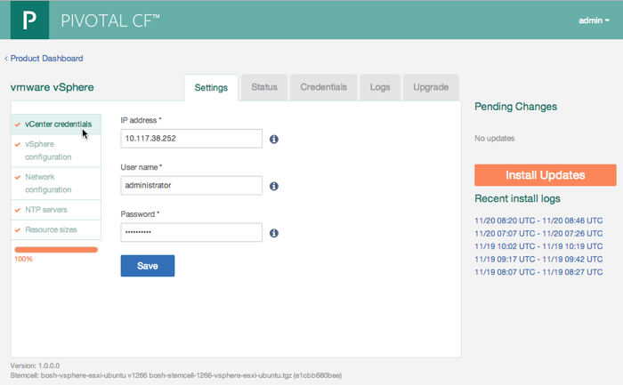
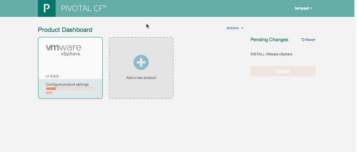

Configuring Pivotal CF Operations Manager to Install Pivotal AX
Follow these steps to configure the Pivotal CF Operations Manager. This application runs in the VM you created in the previous installation steps, which you must complete before completing the steps in this section. See Deploying the Pivotal CF Operations Manager Virtual Machine.
Open a Web browser to the IP address assigned to the Pivotal CF Operations Manager Virtual machine.
The Pivotal CF Logon page displays.

Enter the credentials for the administrative user and click Create Admin User.
The Pivotal CF Operations Manager Product Dashboard page displays.
In the VMware vSphere box, click Configure.
The VMware vSphere configuration page displays: 
Select vCenter credentials and enter the following user information:
Parameter Description IP Address IP address of the vCenter server where your Pivotal AX virtual machines will be created User Name User name for access to the vCenter server. The user should have privileges to create and delete virtual machines and folders Password Password for access to the vCenter server Click Save.
Select vSphere configuration.
Enter the following newtorking information from your vSphere configuration:
Parameter Description Network Name The name of the Network as defined in your vSphere configuration Datacenter Name The name of the datacenter as defined in your vSphere configuration Cluster Name The name of the Cluster as defined in your vSphere configuration Datastore Name The name of the datastore as defined in your vSphere configuration Resource Pool Name (Optional) The resource pool where you will deploy Cloud Foundry Click Save.
Select Network configuration and enter the following network information. Operations Manager uses this information when creating the virtual machines for your Pivotal AX installation.
Parameter Description Subnet A valid range of IP addresses that vSphere can use to provision virtual machines. Use CIDR notation to enter the range. For example: 172.16.64.1/24Reserved IP Ranges A list of IP addresses that you do not want provisioned by vSphere. List the IP addresses separated by commas. You can also specify a range of addresses. For example, the following entry: 172.16.64.1-172.16.64.3excludes the following IP addresses:172.16.64.1,172.16.64.2, and172.16.64.3DNS One or more valid Domain Name Servers to be used by the provisioned virtual machines Gateway Gateway to be used by the provisioned virtual machines Select NTP Server to configure a Network Time Protocol (NTP) server. Setting an NTP server provides consistent and valid time stamps for event data. Enter the IP addresses or host names of one or more NTP servers, separated by commas.
Click Save.
Select Resource sizes and click Save to accept the default values.
Click Install.
The Pivotal CF installation begins. You can click the Show Verbose Output link to view the progress of the installation.
Click Go To Main Page.
The Pivotal CF Operations Manager Product Dashboard page displays again: 
Click Add a new product .
The Add Products screen displays.
In the Upload a Product box, click Choose File.
A file browser window opens.
Browse to the zip file containing your Pivotal AX software. (for example,
pax-1.0.0.0.zip) and click Open.In the Upload a Product tile, click Add.
The components are uploaded to the Pivotal CF Operations Manager virtual machine. When the upload completes, the Pivotal AX Settings page displays.
In the next steps, you configure your Pivotal AX installation and its connection to the Pivotal HD cluster.
If your Pivotal HD deployment was installed using Pivotal Command Center, continue with the steps in Preparing your Pivotal HD Deployment for Pivotal AX. After completing those steps, follow the steps in Configuring Pivotal AX.
If your Pivotal HD deployment was not installed using Pivotal Command Center, continue with the steps in Configuring Pivotal AX.